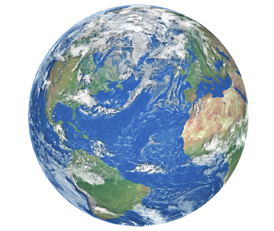
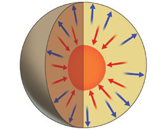

LA GEOSFERA
PRACTICAR y AVANZAR
- Indica qué características de la Tierra condicionan que nuestro planeta tenga:
- a. Una intensa actividad geológica.
- b. Una temperatura media en su superficie de 15 °C.
- c. Una atmósfera densa.
- d. Un campo magnético o magnetosfera.
- ¿Qué consecuencia tendría para la atmósfera la desaparición del campo magnético de la Tierra? ¿Y para los seres vivos?
- Explica la utilidad que tienen para los seres vivos los gases de la atmósfera.
- Los bioelementos son elementos químicos presentes en los seres vivos. Investiga cuáles son, citando las fuentes consultadas.
- El núcleo de la Tierra está formado mayoritariamente por hierro. Investiga si este elemento químico está presente en el interior de tus células y, en caso afirmativo, explica cuál es la función que desempeña. ¿Podría otro metal hacer la misma función? Indica las fuentes consultadas.
- Define los siguientes términos: aire, biosfera y continente.
- Prepara una presentación sobre las diferencias que existen entre las regiones continentales y las oceánicas y muéstralas en clase.
- ¿Qué capa de la geosfera se observa en esta imagen?

- Elabora una infografía buscando y contrastando información para contestar las siguientes cuestiones:
- a. ¿A partir de qué componentes se formó la geosfera? Ten en cuenta que la Tierra se originó hace 4,600 millones de años.
- b. ¿Qué característica de la geosfera primitiva permitió que sus rocas se organizaran en capas, según su densidad?
- c. Ordena las capas de la geosfera de menor a mayor densidad.
- d. ¿Por qué la superficie de la geosfera se enfrió más rápidamente que su interior?
- e. ¿Qué impactos sobre la geosfera ha producido el ser humano?
- La geosfera se define como la parte de la Tierra que está formada por rocas. ¿En qué estados de agregación se pueden encontrar estas rocas en la actualidad?
- ¿De qué color están representados los materiales más densos durante su migración? ¿Y los menos densos?
- ¿Cuál fue la consecuencia de estos movimientos relacionados con la estructura interna de la Tierra?
- Investiga cuál es la profundidad máxima alcanzada en un sondeo realizado por el ser humano. Cita las fuentes consultadas.
- ¿Qué porcentaje del radio terrestre supone la profundidad alcanzada?
- ¿Por qué los métodos directos solo informan de las rocas superficiales de la geosfera?
